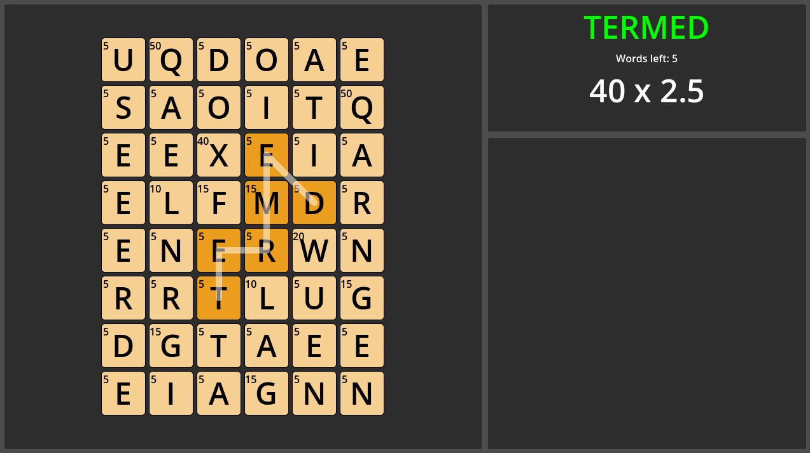

Wordfall (working title)
Creator
Feb 2026 - Present


Game Engine: Godot
This is a game idea I've had for a while that I originally prototyped with Scrabble tiles. I wrote all the code myself but had a bit of assistance from some professional coders who helped me find the best way to attack the project. Future plans for this project include adding a settings and options menu that allow you to change various aspects of gameplay along with multiple preset game modes.
The game is currently under development and a public beta of the game is expected to release on itch.io in May 2026.